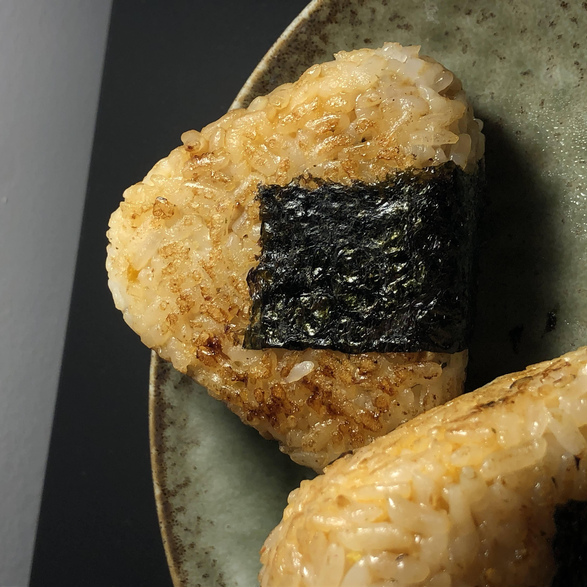

Yaki Onigiri

Description
Perfect food to pack for a roadtrip! :)
Ingredients
Rice & Seasoning
- Cooked sushi rice
- Salt
- Rice wine vinegar
- Mirin
- Furikake (optional)
- Sesame oil
Filling
- Tuna
- Kewpie Mayonnaise
- Sriracha
- Black Pepper
- Chopped sour kimchi
To Grill
- Teriyaki sauce
- Cooking oil
- Seaweed sheet
Instructions
Making Rice Balls
- Season your rice with ingredients, adjust based on your preferences
- Wet your hands so the rice won't stick
- Scoop desired amount of rice onto your palm
- Put filling in
- Cover rice with other hand and shape into triangle
Grilling Rice Balls
- Lightly oil a cast-iron skillet on medium heat
- Grill onigiri until all sides are crispy
- Brush on teriyaki or unagi sauce, turn heat down to medium-low